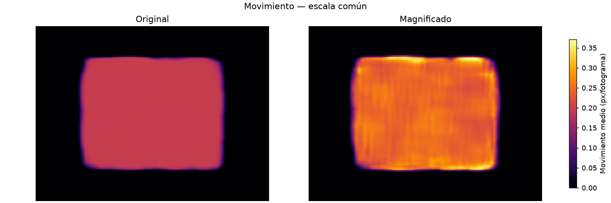
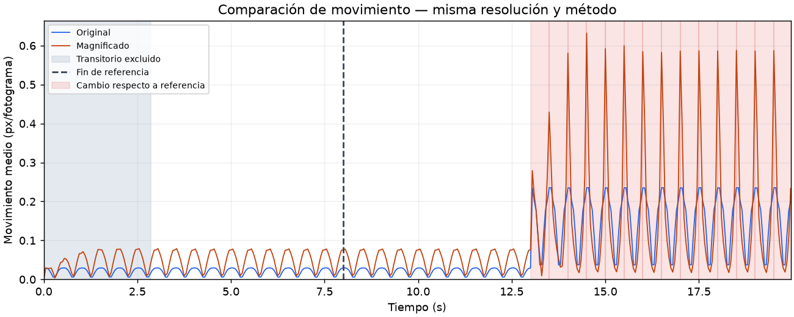

Información de apoyo a la inspección; no constituye un diagnóstico de daños.
Entrada: amplitude_change.avi
Creación (UTC): 2026-11-02T00:07:47.998117+00:00
Identidad SHA-256: af753bc3cad9a5569edb4a6e99371e7a4c08b6ba8b861579fd0898d93cc9bb84
Resolución de procesamiento: [160, 120]. Se aplicó el mismo método de movimiento a ambas versiones.
| Indicador | Original | Magnificado |
|---|---|---|
| Media (px/fotograma) | 0.0742104 | 0.0988376 |
| Percentil 95 medio (px/fotograma) | 0.200104 | 0.292416 |
| RMS medio (px/fotograma) | 0.119271 | 0.159576 |
| Media (px/s) | 1.48421 | 1.97675 |
14 ventanas con cambios respecto a la referencia. Las ventanas señaladas no equivalen a daños independientes.


| low_hz | 0.7 |
|---|---|
| high_hz | 1.5 |
| alpha | 5.0 |
| spatial_level | 1 |
| max_dimension | 160 |
| baseline_seconds | 8.0 |
| patterns_enabled | True |
| capture_notes | Simulación controlada: cambio de amplitud a los 13 s; cámara fija e iluminación constante. |
Consulta informe.json para duración y alcance del reloj, versiones y valores completos; metricas.csv para cada fotograma; patrones.json para intervalos y puntuaciones. Abre comparacion.avi en el reproductor de escritorio para ver ambos videos sincronizados.
Conserva esta página junto con los demás archivos de la carpeta. Funciona sin internet y puede imprimirse desde el navegador.